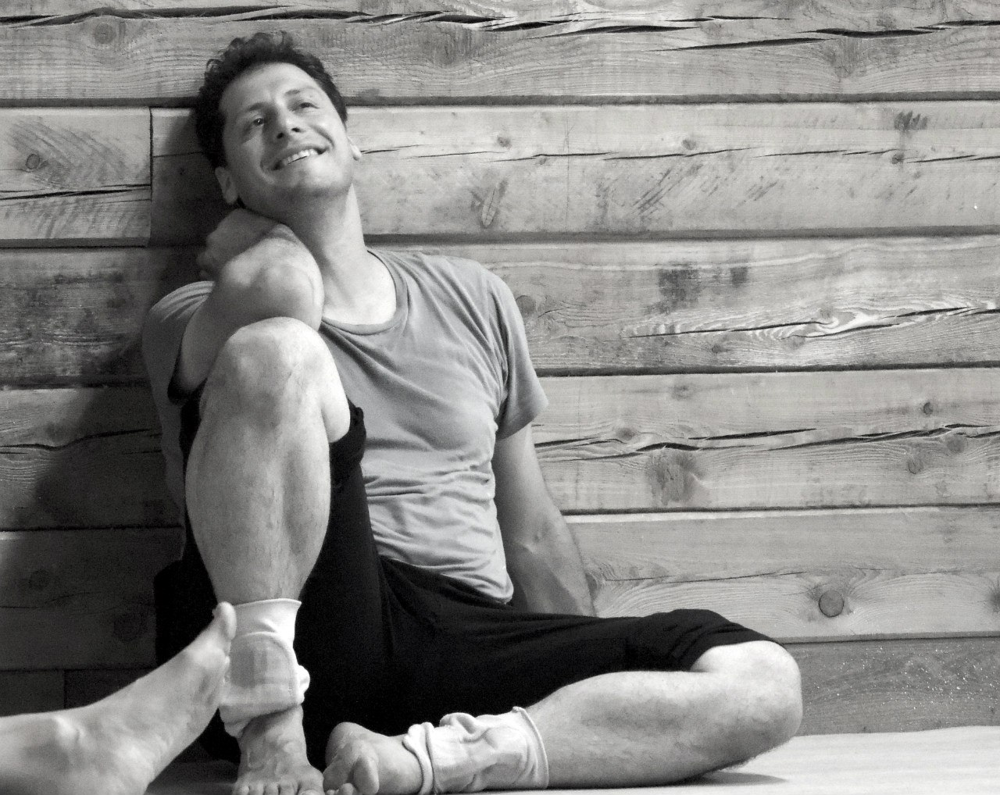
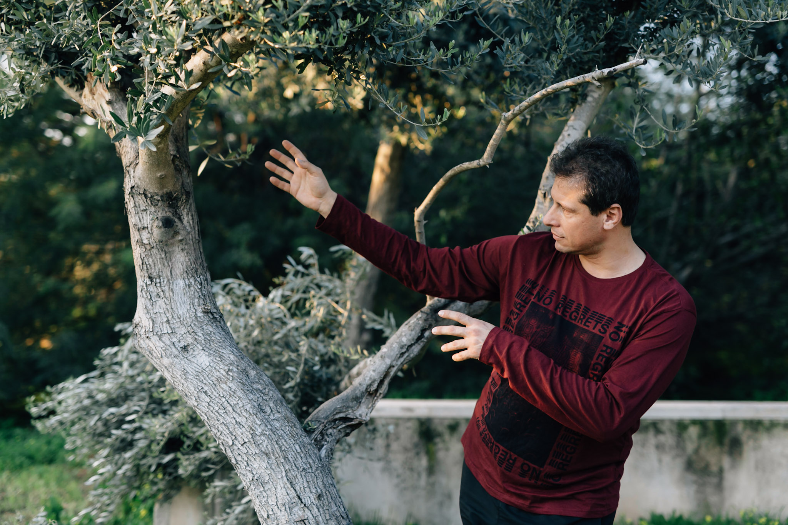
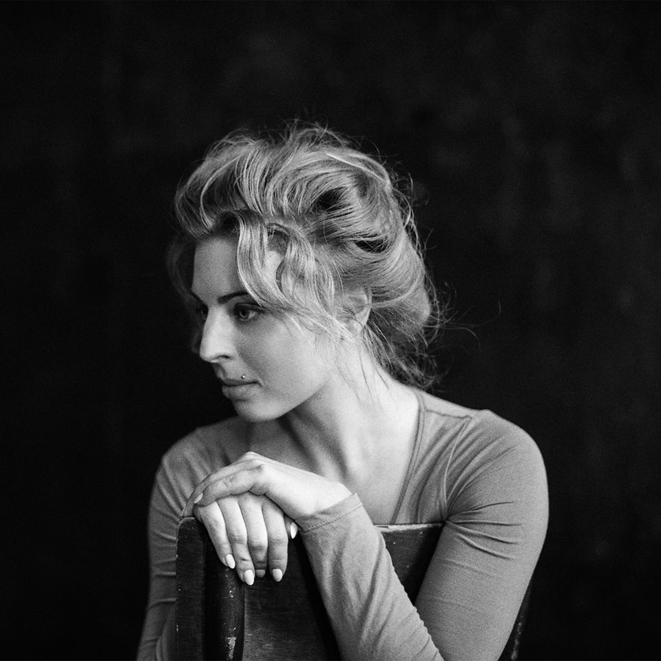
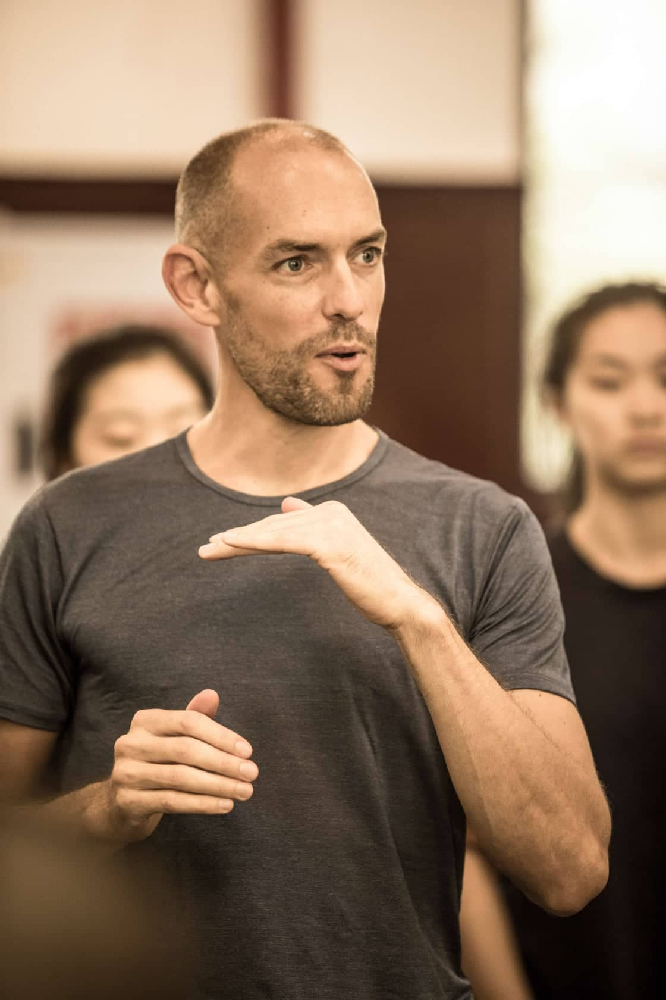
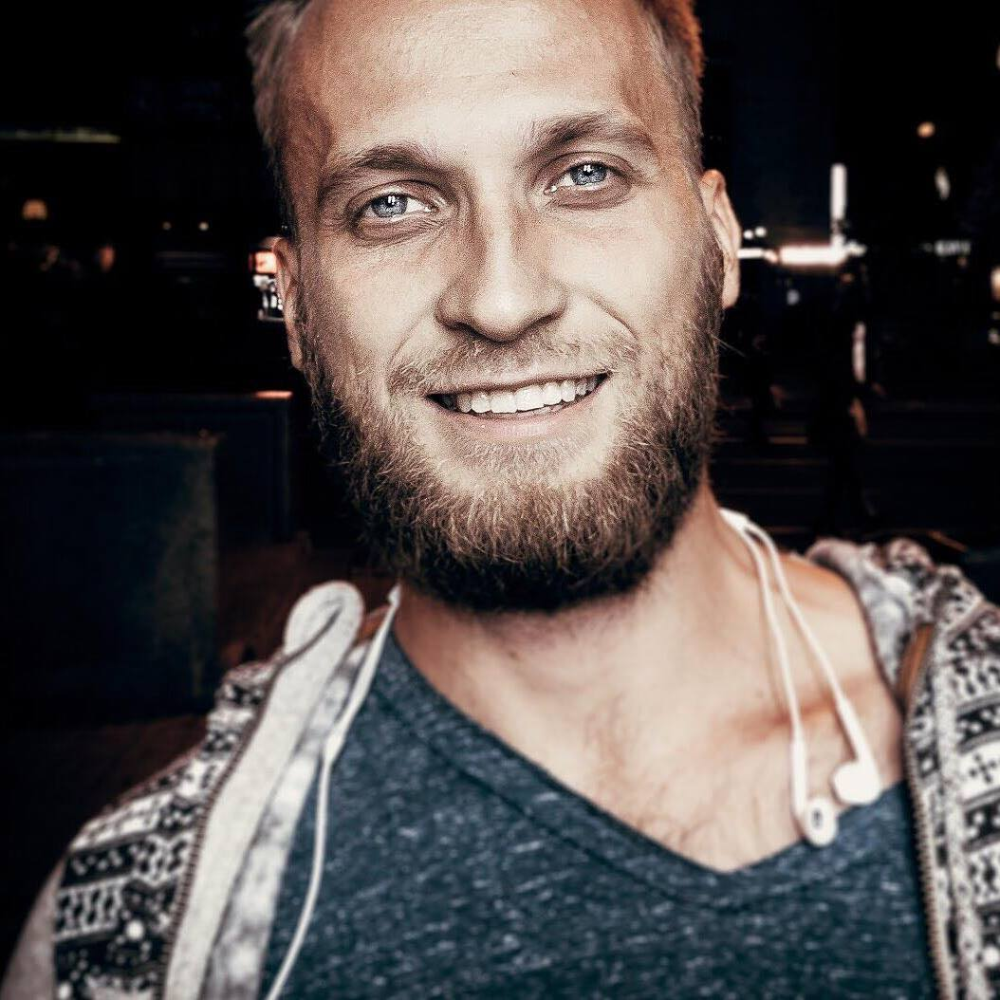
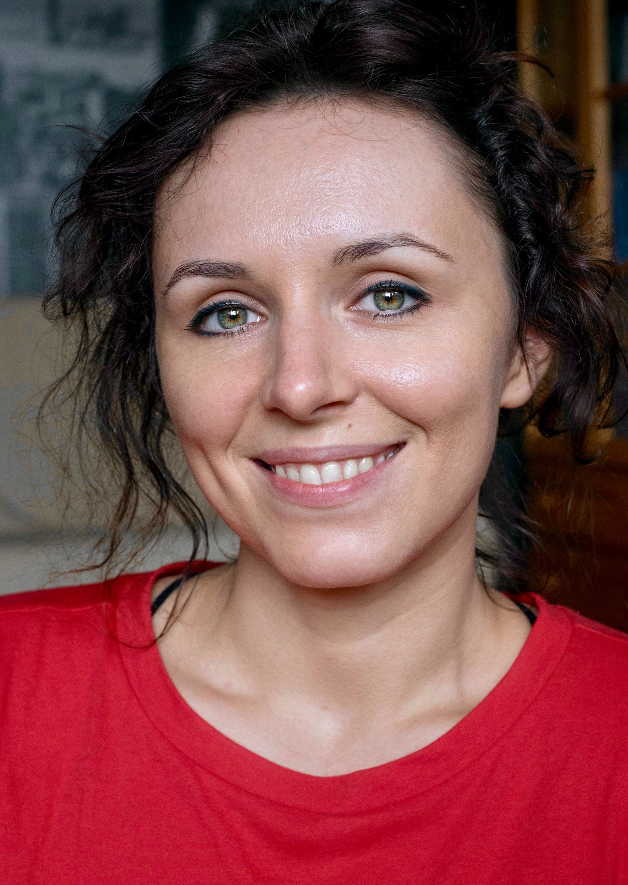
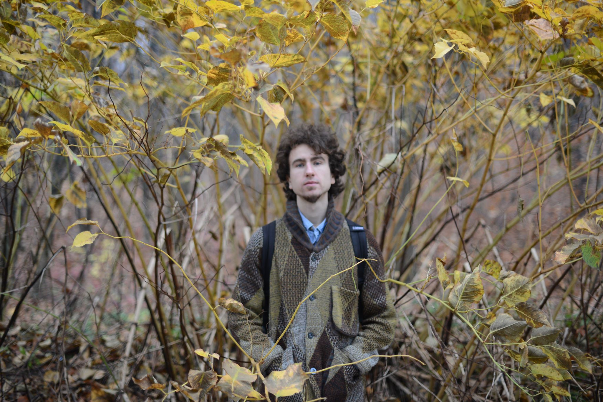

Daniele Sardella/Italy 
Mechanical Engineer, since 1997 is dedicated to Street Art, juggling and equilibrium, from 2002 it became his main job. In 2003 he came in contact with the Biotransazionale Method and begins to practise it and study its principles, and to integrate them with the study of circus techniques; simultaneously he got formed artistically by attending various courses of Equilibrium (Arial Miluca, Claude Victoria), clown (Rita Pelusio, Jean Manigault, Michelin Vanderpoel), dance (Claude Coldy, Lucia Latour, Ketty Russo, Simona Fichera, Marta Ciappina, Tom Weksler, Kira Kirsh, Nita Little, Angelika Donji, Ray Chung), studying theater at "Pontedera Theatre Foundation" (2004-2005) and working at the Bellucci Aquatic Circus (2005-2006). From 2009 to the present days he is forming in teaching a personal application of Biotransazionale Method to Handstand and Movement and to Contact Improvisation, through continuous personal research and by giving classes and intensive workshops. Now he is going deeply into the research of Acrobatic Fluid Dance and Acrobatic Contact Improvisation with special focus to training that increases both the health and the performance possibilities.
In 2017 teaches handstand, acrobatic movement, and contact improvisation also in India (Goa e Mumbai) and in China (Pechino, Shanghai, Guangzhou, Yinchuan, Nantong).
In January 2018 he has been the organizer and host of the performance night if the Goa's Contact Festival. In April 2018 he teaches a one week workshop for the major dancer of the National Academy of Chinese Theatre Arts of Beijing (Oper of Beijing).
From October 2018 he is the teacher of Movement (Floorwork, Acrobatic Movement and Contact Impro) at the Roman School of Circus.
From February 2019 he is the personal trainer and teacher of a dance of Carolina Kostner, Olympic athlete in ice skating.
The main course
Fly with Flow between sky and floor
The main focus of this intensive workshop is to learn how to train our body to improve its health conditions and at the same time its movement skills for individual dance and contact improvisation. Every day it will be composed of three different and integrated parts: 
- We will start with an Active Postural Stretching in Movement, based on the knowledge of how the parts of the body are connected and using it to reduce compensation and get the stretching more efficient. Through this training, we will meet our body's particular limits, and learn to not pass them, and increase them in a respectful way while getting awareness of the connections between the different parts. In this way, we will enhance our movement possibilities and get already the movement more
- We will then explore the individual movement and how to get it efficient, fluid and effortless. We will learn some important basic tools (floorwork, change of levels, back bending, reversing the weight on the hands) that will get the personal movement's research more safe and rich and joyful.
- We will finally learn how to improvise in contact with other bodies, looking for flow and enjoyment. This last part integrates the tools explored in the first part of the class with the intent of learning how to listen to the partner's movement and communicate in an easy and effortless way, up to support and be supported and fly with easiness and care.
The training proposed is a healing process for several reasons:
- The Active Postural Stretching is derived by a physiotherapeutic approach (named Biotransazionale) and causes a better alignment of the body;
- Exploring one's personal movement with this gentle approach helps the body to redistribute the tensions in a coherent way;
- The training helps to open one's vision and be more adaptable to the external conditions;
- It also develops trust and listening for oneself and for the partner, without schemes or predetermined roles, invites the authenticity in communication and then in relationships

Toma Nuevo/Russia
Choreographer, dancer, release-dance, improvisation technique coach, Feldenkrais therapist, Osteopathy practitioner, Voice dialogue facilitator, tango performer and teacher for 18 years.
She created her own dance movement style from early childhood by a deep connection to the natural capacity, Olympic sports, classical & contemporary dance with experiences in Gaga-teacher course in Batsheva Dance Company (Israel) 2010.
She is teaching the ISE technique, which is: Images / Sensation / Expression. Expression images and sensations through the body process.
She is Moderator and inspirer of the project "Doby Room Lab", dedicated to health, creativity, movement, the art of living through changes together, and the integration of all professional skills into the personal daily life.
ISE technique class Images / Sensation / Expression.
It is a non-stop session for 1h. You follow the instructions of the teacher, which are layered sequences.
We delicately awake the deep sensors of the body; practicing balance, strength, flexibility. We connect to our inner source of power, space and other people in motion.
We work without mirrors and allow different images to appear in motion. Therefore, a clear understanding of form comes not from copying, but from deep palette of bodily sensations.
We become to be aware of our patterns in posture and movements. We are searching for new ways of self-presentation.
This class is about joy, fun, jokes, health, creativity, sensations and clarity in movement, dance and daily life. It combines 5 modern dance techniques, sense of humor and the holistic art of osteopathy.
Get enough sleep before the class.
Wear comfortable, soft clothes, not a skirt. No shoes needed, socks or barefoot. Order a sunny day and come 5 min in advance
Alexander Kosko

Movement-voice therapist, Tai Chi teacher and CI dancer, performer, and traveler.
Alexander deals over 30 years with the body and movement material, starting with Martial Arts, meditation, Qigong and Tai Chi, continuing with psychology, dance-therapy, body-mind therapy, bodywork and massage practice, vocal and performance studies.
Contact Improvisation and performance learned from Nita Little, Andrew Harwood, Benno Voorham, Martin Keogh, Rey Chang, Arie Burstein, Mirva Makinen, Angela Donny, Ekaterina Basalaeva and many others.
Alexander teaching original material for 14 years in Russia, Israel and other countries. Creator and one of the leaders of Development Dance Israel Festival, part of The Association of ICIL (Israeli Contact Improvisation Leaders).
These days Alexander leads “School for voice, speech and public speaking”, gives weekly classes of “Physical hallucinations movement theatre”, leads long session explorations with blindfolds, works in his outdoor project “Creation from the cave”, leads abroad trips with kind of road-trainings, on regularly base performs in “Passive / Aggressive” performance.
Workshop
“Imagination as a dance partner”
If neither current mood, playing music and my partner inspires my dance, can I find inspiration in Imagination?
There are so many sources to dance. And imagination - is one of the greatest supporters for infinite movement energy.
Technically, an image influence the nervous system and through it in a certain way stimulate body muscles. Our relation to image is emotion, that proposes movement direction and sets a certain intensity.
Moving from imagination, we can be completely free from external stimulation.
In contact dance, sometimes I meet partner by the inner response, visually enchanted by his or her movements. And this image of echo moves me in common body language with my partner.
In 3 classes “Imagination as a dance partner” we explore different approaches in solo and contact dance from the point of creative imagination.
We’ll play with self-body Image and a new quality of it brings us to our new dance. With static postures, we will stimulate our imagination and create new movement patterns. We explore the magical connection between color and movement. We will seek for different ideas of movement image transformation. We will use movement and imagining skills to enrich our ability to enter and accommodate in a contact jam space.
All this process will lead to small groups performances, inspired and choreographed by our imagination score.
Tamara Maksymenko - organizer, project leader, teacher

Tamara is professional dancer, choreographer and a teacher of contact improvisation and contemporary dance for 12 years already. She has been teaching many workshops all over the world (Poland, Spain, Israel, Austria, Italy, Greece, Finland, Egypt, Germany, Russia, Ukraine, Morocco, Bulgary). She is the founder of Motion Mode Dance Theatre (MMDT) and the creator of the DNAture, FEMMINILE, 6th DAY, The MIRROR, La Loba projects on the MMDT base. Organizer of Evenings of Improvisation around all over the world. 25 years of dance experience (since the early age of 4). She got medical education in body therapy and sociology at Dnipropetrovsk National University and trained at the Physical Theatre in Intragna (Switzerland) with Thomas Mattler http://www.keep-searching.ch/about.html Now Tamara is collaborating with the Austrian Culture Association Don Quichotte KulturZentrum ~ Freier Proberaum Kunst Manifeste ~ Innsbruck, Ukrainian Contemporary Dance Platform Association and she is a member of OFFTANZ Tirol Association (Austria)
Workshop
"Support and flying in a dynamic"
For 1,5 hours of WS we can only open a few approaches to fly together. The workshop will be based on the idea of how to be light, dynamic and how to be strong but agile support. How to recognize clearly the direction of inertia during couple movements, how to help and to follow through the liftings energy.
Ulli Wittemann (Germany)

A passion for movement and growth has drawn Ulli to new directions since he was a child.
From practicing Ballroom Dance and Hip Hop as a teenager and many years of studying different Martial Arts forms (Judo, Aikido, Kickboxing, Boxing and nowadays Muay Thai) he finally fell in love with Contact Improvisation in 2001 during his actor's studies at the University of Performing Arts in Frankfurt, Germany. After eight years of performing more than 1000 shows in the German State Theater system, he decided to change his focus from performing to sharing his love for Contact Improvisation, Acting, Awareness, and Communication in Munich and abroad. In the last years, he taught Workshops, Classes, and Retreats in China, Japan, India, Thailand, Bali, Israel, Palestine, Russia, USA, Canada, Turkey, and many European Countries. He is one of the Founders of the Tempelhof Contact Festival in Germany and the Conscious Flow Festival in India and currently co-organizes the new BODY MIND SOUL Festival (17. to 19. May), the third German edition of the Touch&Play Festival (1. to 7. August) and his nature retreat BEING HUMAN (28. August to 1. September).
"For me, a good class consists of the sensation of growth of every individual and the joy of the collective experience."
http://consciouscontact.de
PLAYFIGHT INTENSIVE
If you were always looking for a place to enjoy your warrior energy in a safe and focused atmosphere or just playfully fight - this is your chance!
In this work, I combine my desire for intensity and dynamic play from martial arts with the awareness of Contact Improvisation. On the base of 25 years of experience in different martial arts forms (Judo, Aikido, Kickboxing, Boxing and lately Muay Thai) I created exercises and scores, which enable also less sportive people to explore and enjoy their warrior energy in a safe environment. Since 2011 I've offered this work many times in workshops, classes and festivals and the effects are always shining faces, sweaty bodies and a feeling of strong connectedness.
The structure:
After warming up we will work with clearly structured exercises to learn new skills and techniques while practicing to keep our awareness and presence even in moments of intense interaction. With clear rules and high presence, we can work on a level which we usually wouldn't dare to tap into. Once we've filled our toolbox with new tools and toys, we will try them out in phases of free play, where we can either play with the learned material or just jam and wrestle as you like! I will give you scores and ideas to play with and coach you and your partner/s in your work. We will wrap up the sessions by some relaxing massage and warming down together.
The philosophy of my PLAYFIGHT system is to replace old stereotypes of violent conflicts (or even trauma) with a joyful and playful togetherness, to enjoy intensity together with presence and respect!
Looking forward to wrestle and play with you!
 |
Dmitriy Zakharov (Ukraine)
VideoMaker, photographer and CI dancer. Creates video stories of the emotional body, and of the people who create incredible stories with their movements. |
 |
A(nge)lina Romaniuk (Ukraine/Poland)
Amateur photographer, Alfa Gravity trainer, mover and a discoverer. |
 |
Denys Petryshyn - musician A multi-instrumentalist from Ukraine (guitar, didgeridoo, jew's harp and vocal). Likes playing the music that tends to immerse into a place where nothing is left except space for discovering yourself. By watching, listening, dancing... |